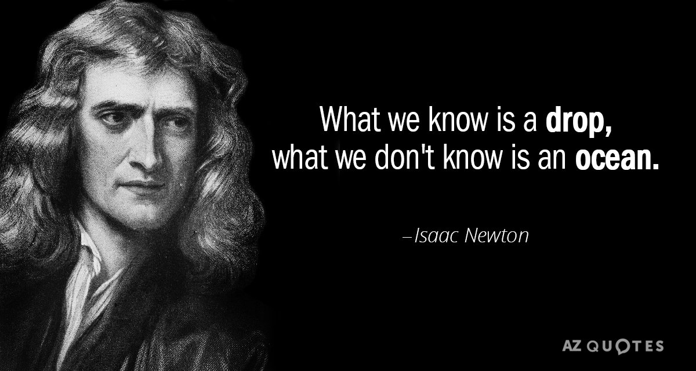

Sir Isaac Newton
Philosopher, Astronomer, Physicist, Scientist, Mathematician (1642–1727)
A Short Intro
A chronology of Isaac Newtons life:
1642 - Isaac Newton was born in Lincolnshire, England.
1661 - His uncle, a graduate of the University of Cambridge's Trinity College, persuaded Newton's mother to have him enter the university.
1665 - As the Great Plague that was ravaging Europe had come to Cambridge, thus forcing the university to close. Newton returned home to pursue his private study. It was during this 18-month hiatus that he conceived the method of infinitesimal calculus, set foundations for his theory of light and color, and gained significant insight into the laws of planetary motion.
1667 - Newton returned to Cambridge and was elected a minor fellow at Trinity College, as he was still not considered a standout scholar.
1669 - Newton received his Master of Arts degree at the age of 27. During this time, he came across Nicholas Mercator's published book on methods for dealing with infinite series. Newton quickly wrote a treatise, De Analysi, expounding his own wider-ranging results. He shared this with friend and mentor Isaac Barrow, but didn't include his name as author.
June 1669 - Barrow shared the unaccredited manuscript with British mathematician John Collins. In August 1669, Barrow identified its author to Collins as "Mr. Newton ... very young ... but of an extraordinary genius and proficiency in these things." Newton's work was brought to the attention of the mathematics community for the first time. Shortly afterward, Barrow resigned his Lucasian professorship at Cambridge, and Newton assumed the chair.
1671 - The Royal Society asked for a demonstration of his reflecting telescope. The organization's interest encouraged Newton to publish his notes on light, optics and color in 1672; these notes were later published as part of Newton's Opticks: Or, A treatise of the Reflections, Refractions, Inflections and Colours of Light.
1678 - Newton suffered a complete nervous breakdown and the correspondence abruptly ended. The death of his mother the following year caused him to become even more isolated, and for six years he withdrew from intellectual exchange.
1687 - Newton published Philosophiae Naturalis Principia Mathematica (Mathematical Principles of Natural Philosophy). Said to be the single most influential book on physics and possibly all of science, it is most often known as Principia and contains information on nearly all of the essential concepts of physics, except energy.
1696 - Newton was able to attain the governmental position he had long sought: warden of the Mint; after acquiring this new title, he permanently moved to London.
1699 - As master of the Mint, Newton moved the British currency, the pound sterling, from the silver to the gold standard.
1703 - Newton was elected president of the Royal Society upon Robert Hooke's death.
1705 - he was knighted by Queen Anne of England. By this point in his life, Newton's career in science and discovery had given way to a career of political power and influence.
1705 - in a controversy that had been brewing for several years, German mathematician Gottfried Leibniz publicly accused Newton of plagiarizing his research, claiming he had discovered infinitesimal calculus several years before the publication of Principia.
1712, the Royal Society appointed a committee to investigate the matter. Of course, since Newton was president of the society, he was able to appoint the committee's members and oversee its investigation. Not surprisingly, the committee concluded Newton's priority over the discovery.
1727 - After suffering from health problems for a number of years, he died on March 31, at the age of 84.

For further information on one of the greatest scientific minds to have ever lived, please feel free to check out his wikipedia page